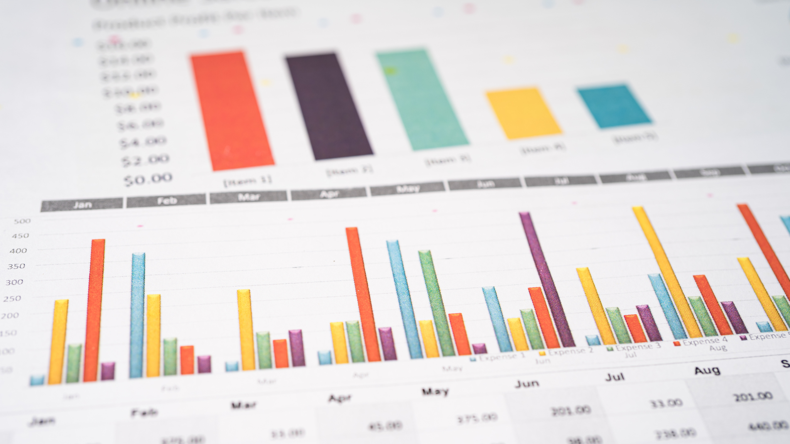

O que é o Excel?
O Excel é um software de planilhas eletrônicas desenvolvido pela Microsoft e parte do pacote de produtividade Microsoft Office. Ele é amplamente utilizado para organizar, calcular, analisar dados e criar representações visuais de informações. Sua flexibilidade e versatilidade tornam o Excel uma ferramenta essencial em diversos setores, como empresarial, educacional e pessoal.

https://icon-icons.com/pt/icone/microsoft-office-Trezentos-e-sessenta-e-cinco-excel-logo/145720
Principais Funcionalidades do Excel
1. Área de Trabalho
A interface do Excel é projetada para facilitar o uso e a navegação, permitindo que os usuários acessem rapidamente as funcionalidades necessárias.
-
Barra de Título:
Exibe o nome do arquivo aberto, permitindo fácil identificação.
Use a barra de título para saber rapidamente qual arquivo você está editando.
-
Barra de Acesso Rápido:
Permite personalizar comandos de uso frequente, facilitando o acesso às funções mais utilizadas.
Adicione os comandos que você mais usa para agilizar seu trabalho.
-
Faixa de Opções (Ribbon):
Organiza funcionalidades em guias, como “Página Inicial,” “Inserir,” “Fórmulas,” “Dados,” “Revisão” e “Exibição.”
Explore cada guia para descobrir ferramentas que podem melhorar sua produtividade.
-
Barra de Fórmulas:
Mostra e permite editar o conteúdo da célula ativa, facilitando a edição de fórmulas e textos.
Utilize a barra de fórmulas para revisar e editar seus dados facilmente.
2. Estrutura de Dados
O Excel é baseado em uma estrutura de células organizadas em linhas e colunas, permitindo a fácil entrada e manipulação de dados.
-
Células:
Unidades básicas onde os dados são inseridos e podem conter texto, números ou fórmulas.
Clique em uma célula para começar a digitar ou editar informações.
-
Linhas:
Organizadas horizontalmente e numeradas, permitindo uma fácil referência.
Use as linhas para organizar seus dados em categorias claras.
-
Colunas:
Organizadas verticalmente e identificadas por letras, facilitando a categorização dos dados.
Aproveite as colunas para classificar e filtrar seus dados rapidamente.
3. Funcionalidades Avançadas
-
Cálculos e Fórmulas:
O Excel permite realizar desde operações matemáticas simples até cálculos complexos utilizando fórmulas e funções, como SOMA, MÉDIA e PROCV.
Aprenda a usar funções para automatizar cálculos e aumentar a precisão.
-
Gráficos:
Ferramentas para criar representações visuais dos dados, como gráficos de barras, linhas, pizza e dispersão, facilitando a interpretação dos dados.
Experimente diferentes tipos de gráficos para apresentar seus dados de forma eficaz.
-
Tabelas Dinâmicas:
Permitem resumir e analisar grandes volumes de dados de forma dinâmica, oferecendo insights rápidos e interativos.
Use tabelas dinâmicas para facilitar a análise de grandes conjuntos de dados.
-
Macros:
Utilizadas para automatizar tarefas repetitivas, economizando tempo e aumentando a eficiência no processamento de dados.
Crie macros para simplificar tarefas que você realiza frequentemente.
Aplicações do Excel
O Excel é amplamente utilizado em diferentes contextos, oferecendo soluções práticas para diversas necessidades.
-
Empresas:
Ideal para gestão financeira, controle de estoque, análise de vendas e criação de relatórios.
Utilize o Excel para monitorar e gerenciar as finanças da sua empresa.
-
Educação:
Usado para organização de notas, planejamento de aulas e criação de materiais didáticos.
Professores podem usar o Excel para acompanhar o desempenho dos alunos.
-
Pessoal:
Útil para orçamento doméstico, planejamento de viagens e gerenciamento de projetos pessoais.
Crie planilhas para organizar suas finanças pessoais e planejar gastos.
Usos Comuns do Excel
-
Controle Financeiro:
Permite a elaboração de orçamentos, controle de despesas e projeções financeiras, facilitando a gestão do dinheiro.
Elabore um orçamento mensal utilizando fórmulas para calcular despesas e receitas.
-
Análise de Dados:
Ferramenta poderosa para realizar estatísticas, cálculos de médias, desvios padrão e correlações.
Use funções estatísticas para entender melhor seus dados e fazer previsões.
-
Gestão de Estoques:
Ideal para controle de inventário e monitoramento de produtos, ajudando na eficiência do negócio.
Crie uma planilha de inventário para acompanhar o estoque disponível.
-
Planejamento:
Usado para cronogramas, agendas e planilhas de planejamento, otimizando a organização de tarefas.
Utilize o Excel para criar cronogramas e acompanhar prazos de projetos.
-
Relatórios e Apresentações:
Facilita o desenvolvimento de relatórios dinâmicos e visualmente atraentes, ideais para apresentações a equipe e stakeholders.
Monte relatórios de desempenho usando gráficos para apresentar dados visualmente.
Dicas de Uso
-
Utilize Formatação Condicional: Destaque dados importantes automaticamente, ajudando na visualização de tendências e padrões.
-
Explore Gráficos e Tabelas Dinâmicas: Utilize essas ferramentas para uma melhor apresentação dos dados e análises interativas.
-
Aprenda Atalhos de Teclado: Aumente sua produtividade dominando atalhos que agilizam o trabalho no Excel.
-
Salve na Nuvem: Use o OneDrive para acessar seus documentos de qualquer lugar e colaborar em tempo real com outras pessoas.
O Excel é uma ferramenta extremamente versátil que pode ser adaptada para diversas necessidades, tornando-se essencial em muitos setores. Cursos gratuitos e de qualidade estão disponíveis para auxiliar no manejo da plataforma e aprimorar suas habilidades.
Cursos indicados
Para o Word recomendamos esses 3 cursos. O primeiro é o do canal Curso de Excel Online, o segundo é do Curso em Vídeo do Professor Guanabara e o terceiro é do Prime Cursos do Brasil.